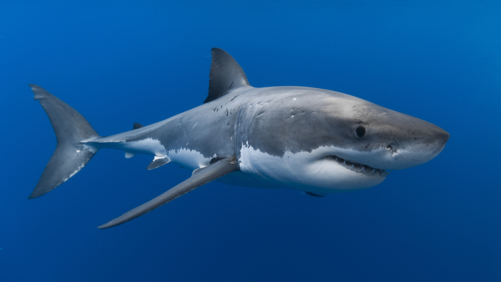
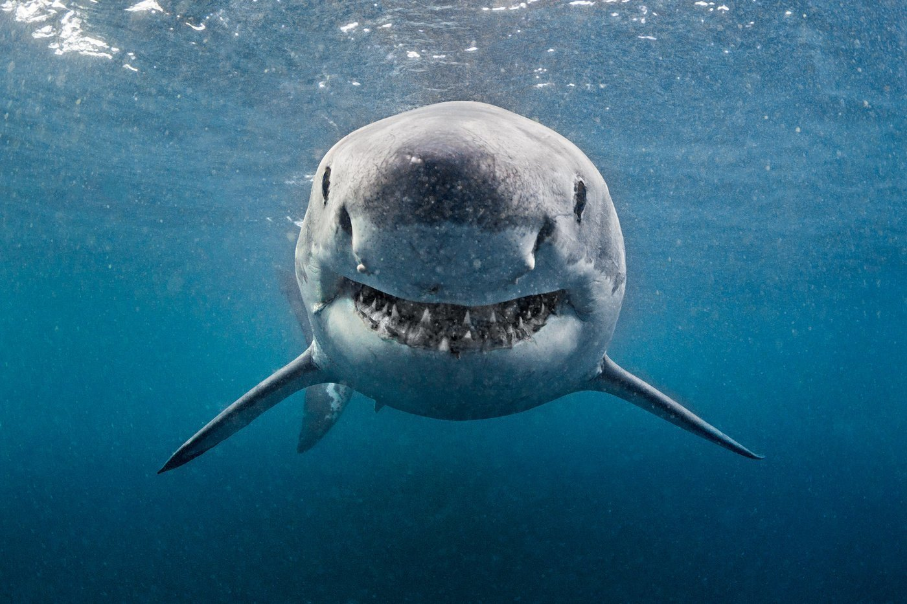
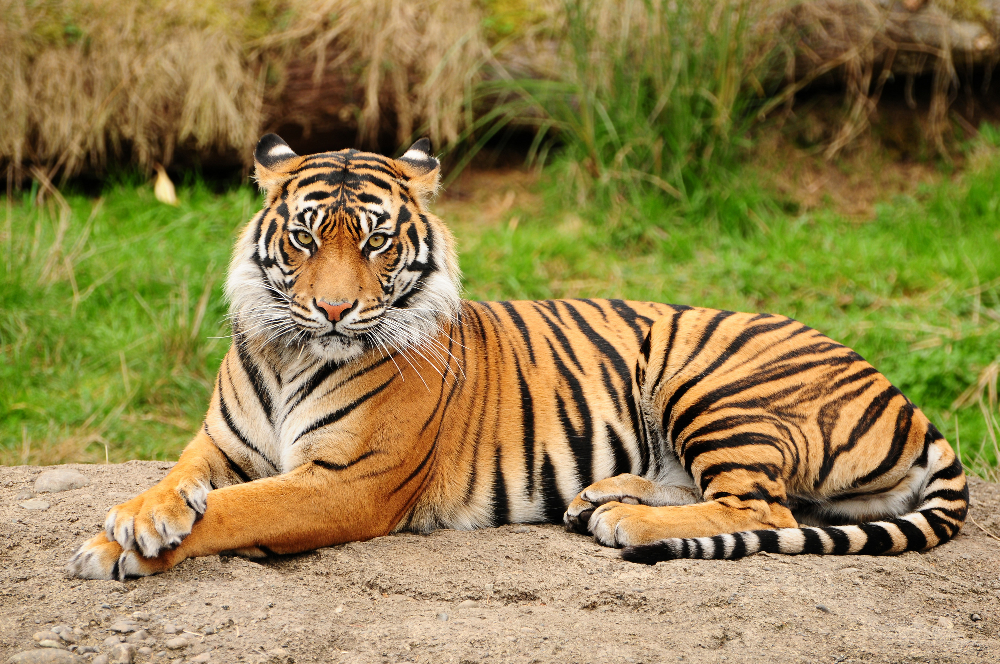
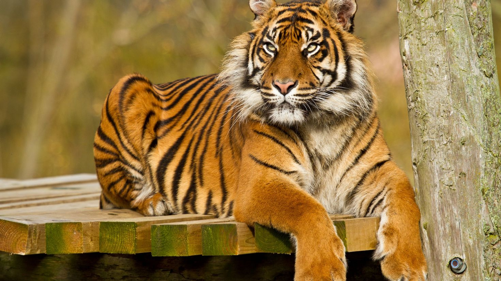
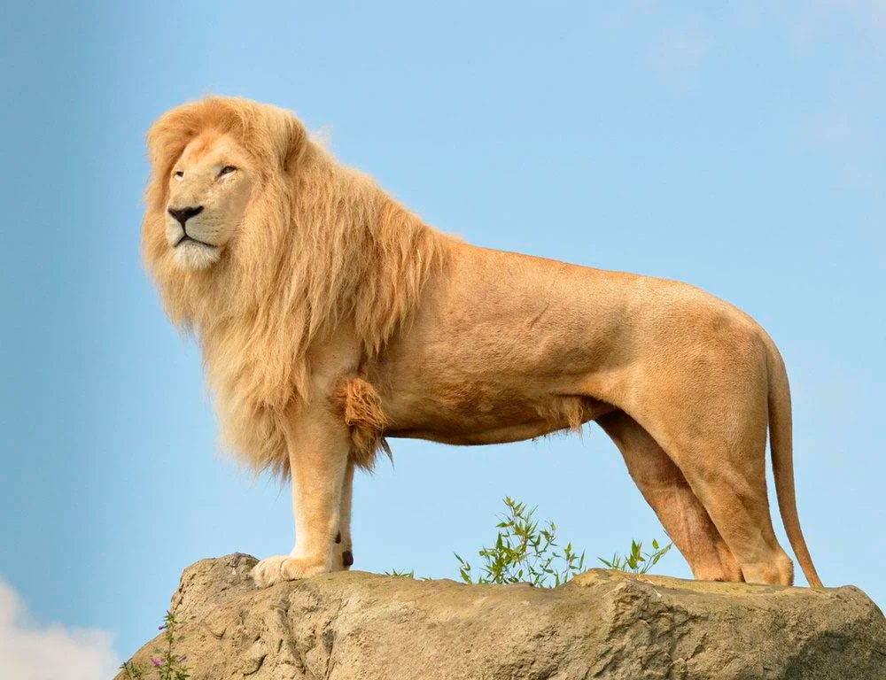
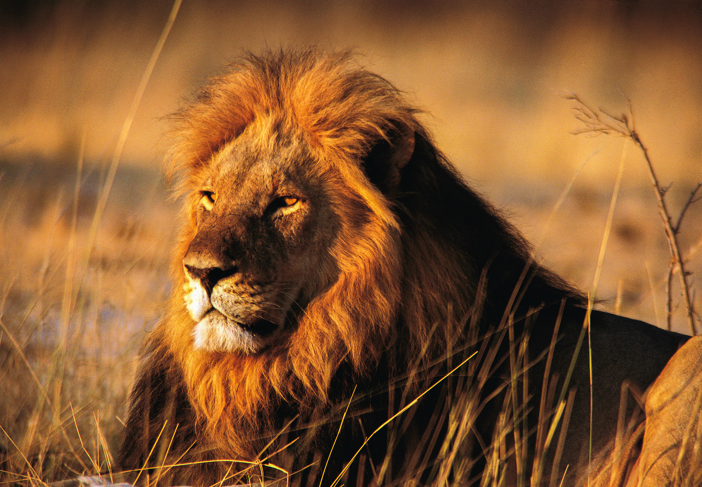

Одни из самых крупных и опасных животных
 
Информация о Акулах
На протяжении многих лет эволюции, у этих водных существ появились уникальные механизмы адаптации, что позволило им обойти в этом плане другие, более древние виды. По мнению ученых, акулы появились на земле примерно 450 млн. лет назад и до сих пор считаются одними из самых совершенных водных животных.
Акулы представляют надотряд хрящевых рыб и подкласс пластиножаберных. При этом они отличаются своеобразным внешним видом, который сводится к тому, что у акул торпедообразная форма тела, несимметричный хвостовой плавник, а также голова с пастью, усеянной несколькими рядами достаточно острых зубов. К русским это название пришло от древнеисландского «hakall», что означало просто любую рыбу. Слово «акула» начали употреблять где-то в 18 веке, что так же означало любую рыбу.
Большинство видов акул отличается наличием торпедообразного корпуса и овально-конической головы. Подобная форма тела позволяет этому морскому обитателю легко и с большой скоростью перемещаться в толще воды. Рыба перемещается за счет волнообразного движения тела, а также за счет работы всеми плавниками, особенно хвостовым. Хвостовой плавник так же выполняет роль руля и состоит из двух лопастей, нижней и верхней, причем в верхнюю часть заходит позвоночник.
За счет боковых плавников акула совершает маневры, как в горизонтальной, так и в вертикальной плоскости. За счет работы парных плавников, акула поддерживает равновесие в воде, при этом за счет наличия столь сложной системы передвижения акула способна совершать уникальные трюки. Единственный недостаток – акула не может двигаться назад, хотя ей это и не нужно.
Интересно знать!
Некоторые виды акул ходят по дну на грудных и на брюшных плавниках, словно на ногах. Светящиеся акулы, длина которых составляет не больше метра, за счет грудных плавников как бы порхают в воде, словно колибри.
 
Информация о Тиграх
Тигры относятся к категории хищных млекопитающих, представляющих весьма многочисленное семейство «кошачьи», являясь при этом типичным представителем рода «Пантеры» из подсемейства «Большие кошки». Слово «тигр», в переводе с греческого языка означает «Острый и быстрый».
Тигры представляют одних из самых крупных хищных животных, входящих в семейство «Кошачьи». Причем, практически все подвиды этого семейства – это крупные и сильные хищники, которые по своему весу уступают лишь медведям.
Тигры – это достаточно сильные, выносливые и массивные дикие кошки. Несмотря на этот факт, в зависимости от подвида, вес диких кошек может варьироваться, хотя и незначительно, как и окрас их шерстяного покрова. При этом следует отметить, что дикие кошки, обитающие на материковой части, всегда крупнее своих сородичей, обитающих на островах. Амурский тигр и бенгальский тигр считаются самыми крупными животными этого семейства, хотя в последнее время Амурский тигр начал отдавать первенство по размерам своему бенгальскому собрату. Взрослые особи, особенно мужского пола, вырастают почти до 3-х метров в длину и могут иметь вес почти 300 килограммов.
Высота хищника в холке составляет больше метра. Тело хищника отличается вытянутой формой, при этом оно гибкое и мускулистое, хотя передняя часть туловища развита значительно лучше задней.
Можно сказать, что хвост у тигра длинный, покрытый шерстью так же, как и тело. На хвосте располагаются поперечные полосы черного цвета так, что образуют кольца, при этом кончик хвоста всегда черный. На каждой передней лапе мощных конечностей насчитывается до 5-ти пальцев, при этом на задних лапах можно насчитать по 4 пальца. Все лапы вооружены цепкими и острыми когтями втяжного типа.
Интересно знать!
Самец оставляет за собой более крупные и более вытянутые следы, по сравнению с самками. При этом средние пальцы заметно выступают вперед, по сравнению с боковыми. След, оставленный самцом, имеет длину порядка 160 мм, при ширине около 140 мм, а самка оставляет след, длиной порядка 150 мм и шириной – около 130 мм.
 
Информация о Львах
Царь зверей – именно так называют могущественное, сильное и бесстрашное животное. Благодаря своему воинственному внешнему виду, силе, а также умению быстро бегать, это животное никогда и никого не боится. К тому же, его действия всегда продуманные. Этот хищник наводит ужас на всех животных, которые живут рядом с ним, поскольку они боятся его сильных и мощных челюстей.
Следует отметить, что львы всегда, на протяжении многих столетий считались божественными животными. Древние египтяне считали, что львы охраняли вход в потусторонний мир, а бог плодородия Акер всегда изображался с гривой льва. В наше время изображение этого сильного и бесстрашного хищника присутствует на гербах многих государств. К великому сожалению, этого зверя не миновала серьезная беда и львы на сегодня оказались на грани исчезновения, поэтому их занесли в Международную Красную книгу.
Трудно найти человека на нашей Планете, который бы не знал, как выглядит царь зверей. Это животное легко узнается по характерной львиной гриве, поэтому даже дети легко узнают на изображении этого зверя. Несмотря на то, что льва считают могущественным животным, длина его тела немногим, более 2-х метров. Если льва сравнить с уссурийским тигром, длина которого почти достигает 4-х метров, то лев не такой уж и могущественный хищник. Масса взрослых самцов составляет почти 200 килограммов.
Интересно знать!
Львы, которые содержатся в неволе или в условиях природоохранных зон, всегда имеют больший вес, по сравнению со своими дикими собратьями. Это связано с тем, что двигаются они намного меньше, а пропитания для них всегда достаточно. К тому же, в зоопарках за ними ухаживают, поэтому гривы у них более объемные, по сравнению с теми животными, которые обитают в естественной среде.
 Человек
Человек
преимущественно Homo sapiens sapiens — вид рода Люди (Homo) из семейства гоминид в отряде приматов. В начале верхнего палеолита, около 40 тысяч лет назад, его ареал уже охватывал почти всю Землю (кроме Американского континента, который был заселён позже, примерно 15 тысяч лет назад). От остальных современных человекообразных, помимо ряда анатомических особенностей, отличается относительно высоким уровнем развития материальной и нематериальной культуры (включая изготовление и использование орудий труда), способностью к членораздельной речи и крайне развитому абстрактному мышлению[К 3]. Человек как биологический вид является предметом исследования физической антропологии. На сегодняшний день не осталось ни одной стороны или свойства человека как особи, индивида или члена человеческой популяции, которые бы не были охвачены специальными научными исследованиями. Основные дисциплины, изучающие человека и человечество: